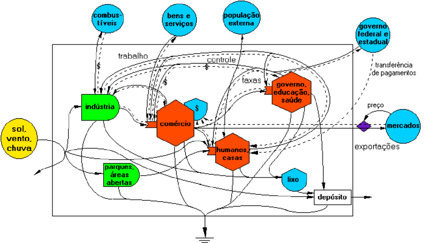

Emergia
A emergia é uma metodologia criada para contabilizar os fluxos de massa e energia que ingressam e saem de um sistema sob uma unidade comum, a emergia, e calcular indicadores que avaliam ecossistemas, naturais e antrópicos, do ponto de vista da sustentabilidade. É uma metodologia criada em 1983, por Howard Thomas Odum. Em 1971 ele publicou seu primeiro livro solo: Environment, power and society (Ed. John Wiley & Sons). Já no primeiro capítulo ele fala da necessidade de que a sociedade humana desenvolvesse uma educação baseada em energia, pelo fato de que energia é a base de tudo.
A avaliação emergética é a quantificação da intensidade dos fluxos de energia associados à disponibilidade de recursos naturais e aos processos de transformação que o homem provoca. Na prática, a sequência de etapas necessárias para a contabilização da interação de um sistema com o meio ambiente pode ser resumida a:
- Identificação de todos os produtos e processos que compõem o sistema em avaliação. Essa classificação definirá a extensão do estudo e permitirá a organização da coleta de dados e contabilização dos fluxos de energia e interação ambiental.
- Análise dos fluxos energéticos do sistema, que consiste basicamente na verificação do balanço energético, dado pela contabilização das entradas de cada processo, a sua capacidade de transformação e as suas saídas.
- avaliação da emergia a partir da conversão dos valores obtidos em termos de energia (normalmente expressos na forma de Joules ou calorias).
O ponto fundamental da emergia é o incentivo a reciclagem, pois caso um produto que já foi desenvolvido e consequentemente teve seu gasto energético na produção, pode ser reaproveitado de outra forma, não necessitando um novo gasto para uma nova criação.
Abaixo, aplicando o conceito de emergia, são apresentadas ONGs que fazem coleta de diversos materiais recicláveis, melhorando a sustentabilidade local.
Figura 1 - Diagrama ilustrando o conceito de emergia em uma cidade.
Fonte: https://www.researchgate.net/figure/Diagrama-de-energia-de-uma-cidade-Odum-1988_fig1_277289830
Figura 2 - Howard Thomas Odum

Fonte: https://www.emergysociety.com/howard-t-odum/